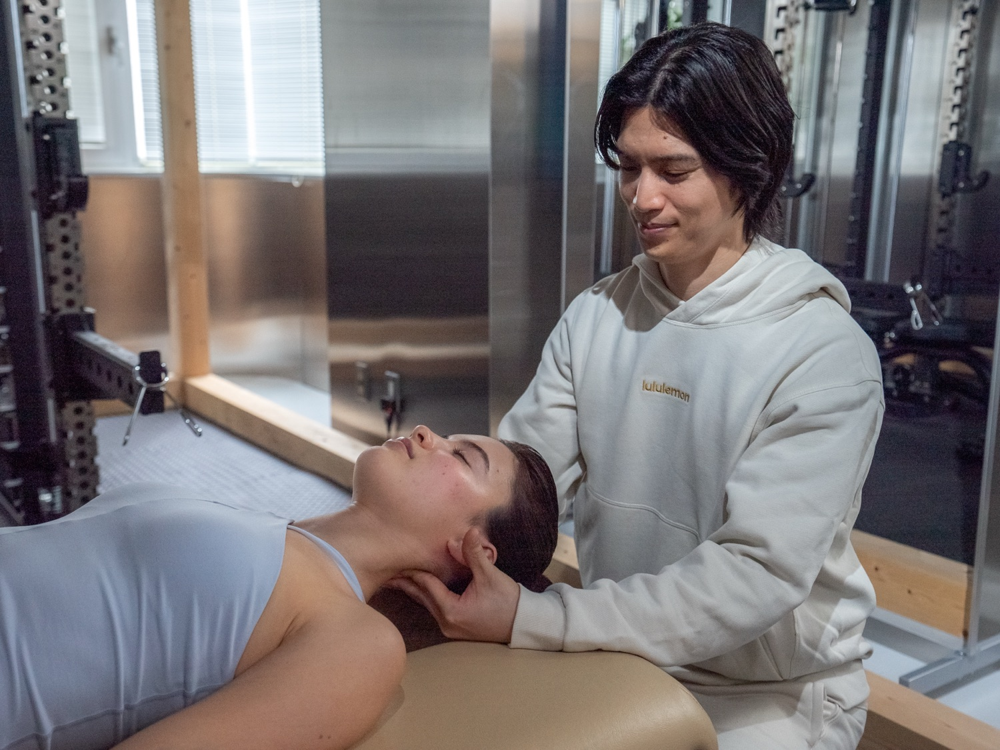
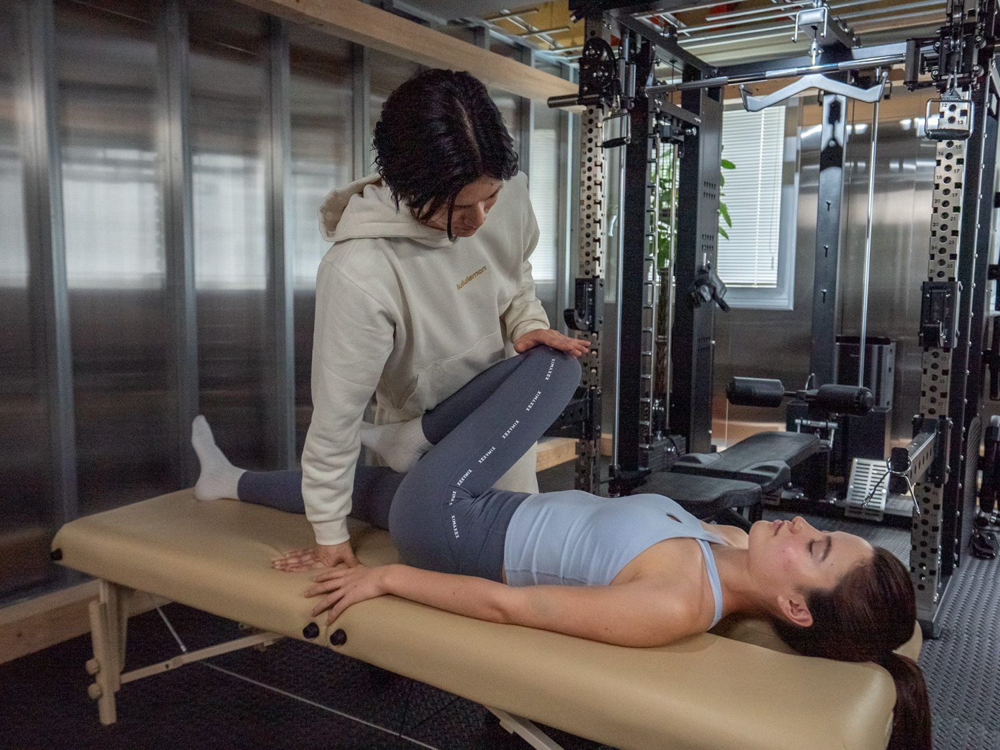
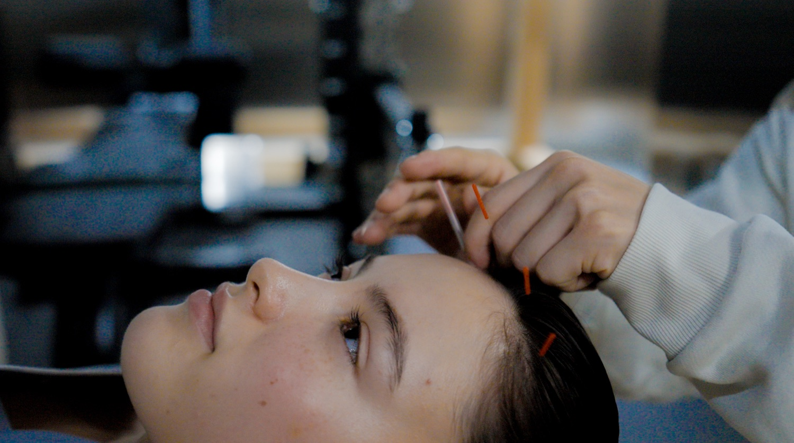

03
Skin
Skin
Skin that circulation reaches changes from within. Puffiness moves on, and a lightness returns to the jawline — not added, but your own colour and firmness.
Colour · Firmness
Not just the face — the whole body.
Facial acupuncture, done properly, in Azabu.
Somewhere, you already know it — skin and expression both come from the circulation within.
The skin of a well-slept morning. The flush after a bath. The clean line of a face once the puffiness is gone.
Nothing added — and yet you look your very best.
Making that no accident —
that is facial acupuncture at kuukan.
So treating the face alone never quite reaches it. At kuukan, we read the whole body first — and needle the face last.

Yuta Ichiki一木 勇太
FounderA nationally licensed acupuncturist and judo therapist, with 17 years of practice and more than 20,000 bodies seen. Five years directing an orthopedic clinic, five more running a personal-training gym; in 2025 he qualified as a Zen therapist. Needling the face is delicate work. That is exactly why it should be done by someone trained in anatomy, who reads the whole body before placing a single needle. It's an order kuukan has never broken.
There was a time my own mind and body reached their limit. When the body changes, the face changes with it. That is where kuukan began. Beauty, I believe, can only stand on good health.
Method
Facial acupuncture on its own doesn't hold. The foundation — circulation through the whole body — isn't there yet. kuukan restores the flow in order: body, then face, then skin.
Skin
Skin that circulation reaches changes from within. Puffiness moves on, and a lightness returns to the jawline — not added, but your own colour and firmness.
Colour · Firmness
Face
Once the foundation is flowing, facial acupuncture moves to the face — softening the expression muscles, easing what's stagnant.
Facial acupuncture
Body
What stops the flow isn't the face — it's the neck, shoulders and back. First, full-body acupuncture and seitai release that tension.
Body acupuncture · Seitai
From the whole body, in order — so it doesn't end the moment you leave.
Three treatments in one: facial acupuncture × full-body acupuncture × seitai (90 min).

Resetting bone and fascia by hand, into a body that doesn't hold the flow back.

Releasing the body's tension to build the foundation for circulation.

To finish, the face — reaching the expression muscles and blood flow directly.
By appointment only. Open slots are usually few, and this season we're taking just a handful of new members.
First Session (90 min)
Facial acupuncture × full-body acupuncture × seitai
By appointment only · fully private room
Two bonuses, for now
Registration ¥10,000 + membership ¥20,000 → ¥0
With same-day sign-up
Members get unlimited access to GYM CONCEPT
Beyond your treatment in a fully private room, unlimited use of a gym just a 3-minute walk from kuukan.
A spacious floor, fully equipped — before work or after.


I've come here for more than four years. I feel a real change every time, because each session is built around how I am that day. Acupuncture and seitai in one place — that's something I've found only here.
Two years now. My posture changed and the shoulder tension I'd had for years eased. Even my face feels brighter — the longer I come, the more I like my own body. Ichiki-san himself is part of why I keep coming back.
It was my first time with acupuncture and I was nervous, but the careful explanation and delicate work had me half asleep partway through. Afterwards, the colour in the mirror surprised me.
Individual experiences. Results are not guaranteed.
Small bruising can occur on rare occasions. It fades naturally within a few days to about two weeks, so we recommend avoiding a session right before an important occasion.
Yes — we can work over makeup, and there's a space to touch it up afterwards.
Yes. Yuta Ichiki, our nationally licensed founder, handles everything from counselling to treatment. By appointment only, in a fully private room.
We're fully by appointment, and open slots are limited.
The skin of a well-slept morning — making that no accident is what circulation means.
Start with 90 minutes. Come feel a beauty that isn't added on.